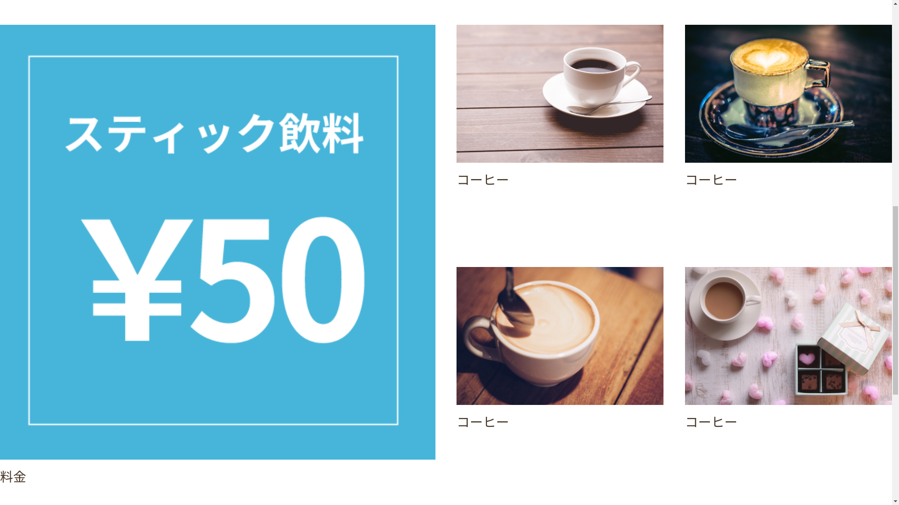

概要
八木田裕伍
本活動の目的は，World Wide Webを構成する基礎的な技術を身につけるとともに，それらを使用してWebサイトなど，班員それぞれの目標物を作成することである．
Webを構成する基本的な技術であるHTMLとCSSを習得した後に，班員それぞれの目標物を作成した．
プロジェクトスケジュール
稲垣和真
| 時期 | 活動内容 |
|---|---|
| 第一回 | Web入門 |
| 第二回 | メンバーの制作物確定，デザインツールの使用方法 |
| 第三回 | デザイン発表，開発開始 |
| 第四回 | 開発，意見交換等 |
| 第五回 | 開発，意見交換等 |
| 第六回 | 開発，意見交換等 |
| 第七回 | デプロイ |
| 第八回 | 企画書の執筆 |
活動内容
稲垣和真
第一回
Webサービスが成り立つためのノウハウをメンバーで共有した．
第二回
Figmaを用いて，Webサイトをデザインしていくためのノウハウを共有した．
第三〜第八回
各自，制作物に向けて準備，作成を行った．
制作物
以下に，本活動の班員の成果物を記載する．
AR 豆まき
八木田裕伍
https://ygkn.github.io/mamemaki/
概要
節分で豆まきをする際，豆の調達や片付けなどをする必要がある．このサイトは，それらの煩わしさを解消するために，AR で豆まきができるというものである．
苦労した点
スワイプをした際の豆を飛ばす位置の計算や，鬼に当たったかの評価をする，三角関数を用いたアルゴリズムを組み立てるのに苦労した．
工夫した点
豆が入った箱をホバー時に動かすなど，使用感をよりインタラクティブにした．
今後の展望
現在確認されている，Android デバイスでは正常に動作しないなどの不具合を改善していくとともに， 得点付けを行うなど，よりゲーム性を高めたい．加えて，グラフィックなどを工夫し，ユーザ体験を改善していきたい．
スクリーンショット

ポートフォリオ
齋藤竜也
概要
自身のポートフォリオとなり得るものを作成した．普段 DTM などを制作しており，その制作物を紹介・まとめておく場である．
苦労した点
トップページの Momonga の文字に対しても波紋の効果を出したかったが使用した jQuery プラグインが文字に対応していなかったため，実現に苦労した．
工夫した点
上記の点を実現するために文字をスクリーンショットして画像として処理した．
今後の展望
リンク先の増加，プロフィールページにアクセスした際のアニメーション，オープニングアニメーションの改良，リンクボタンの UI の改良などを行なっていきたい．
スクリーンショット

Portfolio
水野悟朗
概要
自身のポートフォリオである．今まで制作した作品の概要，私のプロフィール，SNS のアカウントについて知ることが出来る．ポートフォリオという分かりやすく自身を表現するものを一つは持っておきたかったという動機から制作に至ったのである.
苦労した点
背景画像をレスポンシブウェブデザイン対応させる点に苦労した．具体的には，背景画像に使用しているロゴが常に中央に表示されるように設定した．
工夫した点
メニューをクリックした際に該当部分まで自動でスクロールする機能を付けた点である．また，カラーリングを工夫した．
今後の展望
名前のロゴを製作したので，オープニングアニメーションでそれを表示したい．
スクリーンショット

麺屋たけ井の Web サイト
田邉雄士
概要
このサイトは，自身がアルバイトをしている麺屋たけ井の Web サイトである．現在のバイト先の Web サイトに商品メニューが載っていなかったこと，店舗の場所が駅構内にあるが駅構内図がなく，わかりづらかったことが本 Web サイトを制作した動機である．
苦労した点
ナビゲーションバーを作るときに位置の調整に苦労した．デザインがラーメン屋なので力強い印象がある Web サイトを作ろうとしたが，色合いに緩さが出てしまった．
工夫した点
構内図をシンプルかつわかりやすく設計した．メニュー画像を丸くして目に留まりやすいようにした．
今後の展望
情報を多くしていく．お店の外観やつけ麺以外のメニューの画像を入手して埋め込む，店舗に関する情報を随時追加していく．
スクリーンショット


L@BEL の Web サイト
髙山紗世梨
概要
私が所属する DJ サークル L@BEL の公式サイトはスマートフォンに対応していなかった．さらに，更新も止まっている状態であった．以上の理由から，公式サイトのリニューアルを試みた.
苦労した点
L@BEL らしいデザインを考えるのに苦労した.また，文字を中央に揃えるコードを書くのに苦労した．
工夫した点
見ただけでどのような活動をしているサークルなのかわかりやすいようにした.
今後の展望
DJ の活動を知ってもらえるようにミックスを載せるページの作成や, イベント活動を載せるページの作成も行いたい.
スクリーンショット
AtCoder の提出を自動でバックアップを取る Web アプリ
https://github.com/xryuseix/AtCoder_GitCommit
https://github.com/xryuseix/AtCoder_Backup
石川琉聖
概要
AtCoder に提出したソースコードを自動で GitHub 上にバックアップを取るソフトウェアである．
苦労した点
Heroku の環境上で GitHub に push するとき，ローカル環境で push するときと同じようにやると，GitHub の認証で弾かれてしまった点．
工夫した点
上記苦労した点に対し，Git のコマンドに認証を回避するオプションを付けた．
今後の展望
プログラムの実行ログを可視化できるようなサイトを立てようと考えている．
スクリーンショット

ポートフォリオ
立川泰暉
https://takion88.github.io/index.html
概要
ポートフォリオを作った経験が無かったのでポートフォリオサイトを作ろうと思った． 自分の自己紹介とできること，作ったもの，SNS のリンクを記載しただけのシンプルなものにした．
工夫した点
できるだけシンプルな印象を与えられるように必要最低限の情報だけをのせた．
苦労した点
作った物や連絡先のナビをクリックするとその部分へページが移動するようにした． SNS のリンクにカーソルを合わせるとアニメーションするようにした．
今後の展望
より洗練されたシンプルなデザインになるようにしようと思う． また，ポートフォリオの内容も充実したものにできるようにしたい．
スクリーンショット

旅行系 Web サイト
奥川莞多
https://o-kanta.github.io/index.html
概要
これは自分が旅行した場所を紹介するための Web サイトである．写真は自分が撮ったものを載せる．
苦労した点
カーソルをのせた時に扉が開いたようなアニメーションを作成することが苦労した．
工夫した点
トップページからそれぞれの場所に飛んでいくような感覚になるようリンクを配置した．さらに，リンクの配置を工夫し，マス目状にした．自分が訪れた場所が増えれば，マス目を埋めるようにリンクを増やせるようなデザインにした．
今後の展望
リンク先のページを全て完成させたい．JavaScript などを学んでもっと動作があるなページを作りたい．デザインを学んで色や配置をさらに工夫したいと思う．
スクリーンショット

AR で遊びたい人生だった
堀田隆成
概要
AR.js を用いてアイドルマスターシンデレラガールズ 7th 大阪公演で配布するための AR 名刺をつくる予定だった．
苦労している点
オブジェクトのサイズが思ったより大きくて表示されてないと慌てたり，今でもうまく表示されない理由がわからずにいる．
工夫する予定の点
実際に名刺にする際に AR.js で用いられるマーカーをどう組み込むかを工夫する予定だ.また Twitter に移動するような機能もつける予定である．
今後の展望
このプロジェクトを完了させ，他のアイマス現場で配るために複数種類作りたい.また 3D モデルに細い動きをさせられるようにしたい．
ポートフォリオサイト
深田紘希
概要
シンプルなデザインで，自身の成果物を公表できる Web サイトである．
苦労した点
文字をうまく中央付近に表示する方法や上部の三角斜線の表示方法を苦労した．
工夫した点
黄白黒を基調としたシンプルなデザインで，伝えたい内容に集中できるようにした． border を有効活用して，文章をまとめるための縦線を引いたり，三角形を作ったりした．
今後の展望
まだ World Wide Web の特徴であるリンクを作成していないので，今後成果物を作るなどして発展させていきたい．
スクリーンショット

英語の読解問題を解く API
阿部竜也
概要
読解とは文章を読んでその内容を解釈することであり，学力を測るものさしとして利用されるものである．今回は，ニューラルネットワークを用いて読解問題を解く API の開発を行った．
※ ただし，ここで対象とする読解問題は，「出題された文章と 1 つの問題文に対する複数の選択肢のうち，適切なものを選ぶ」ものとする．
ここでは，Doc2Vec というニューラルネットワークアーキテクチャを用いて実装をしている．Word2Vec とは”単語をベクトル化”するものであり，得られたベクトルのコサイン類似度を単語の類似度と定義する．単語をベクトル化することにより，下記のようなことが可能となる．
父親 - 男 + 女
Word2Vec は単語レベルでベクトル表現を行うのに対し，文や文章レベルにまで拡張したものが Doc2Vec である．
今回は，下記の処理を行い読解問題を解くこととする．
1. 問題文をベクトル化する
2. 出題された文章の各文をベクトル化する
3. ⅰで求めたベクトルと，ⅱで求めた各ベクトルのコサイン類似度を取り，最大のものを取り出す
4. ⅲで得た文と各選択肢のコサイン類似度を取り，最大のものを回答とする
苦労した点
学習モデルの精度を高めるためには，大量の教師データが必要である．教師データを収集するにあたり，Wikipedia の全文データを用いるケースが多い． しかし，Wikipedia の全文データのみでは”人間らしさ”の特徴が弱いと判断し，英文のツイートを取得するクローラを開発し，定期的に収集を行っている． 学習モデルの精度は教師データの量や質に起因するため，よりより教師データのビルドに苦労した．
工夫した点
この読解エンジンは一般的なものであり，特定の用途に限らず幅広い応用が考えられる．例えば，読解問題やスパムフィルタリング，文書分類などにも応用可能である．
今後の展望
今回は英語のみとしているため日本語にも対応させたい．
ボランティアサークルの Web サイト
星名藍乃介
概要
私が所属する，国際ボランティア団体「TOM SAWYER」の既存の公式 Web サイトには，サイト上部に Wix.com の広告掲載，悪目立ちする背景色，情報が更新されていないことなどの問題点が見られた．そこでリニューアルした Web サイトを製作した．
苦労した点
Web デザイン，Web コーディングを 1 から勉強するところからスタートしたため，一つ一つの過程に時間がかかった．
工夫した点
「TOM SAWYER｣が 9 文字であったため，文字を 3 行 3
列の正方形に配置したデザインを取り入れたいと考えた．そこでサイトのヒーローヘッダーのデザインにこれを採用し，文字にマスクをかけて背景切り抜き文字にすることで，ファーストビューの見栄えを良くした．
またサークル活動の雰囲気が読者によく伝わるよう，写真を大きめに，多めに配置した．
今後の展望
下記画像にある背景切り抜き文字の背景のみにカルーセルデザインを追加し，複数の活動写真を横にスライドさせる演出を追加したい．スマホ画面サイズにもパソコンにも対応したレスポンシブウェブデザインにしたい．
スクリーンショット


ある施設についてのサイト
北村優奈
https://chamcham10324.github.io/icbcafe.github.io/index.html
概要
ある団体で使用している部屋についての非公式 Web サイトを作成した．
苦労した点
レスポンシブウェブデザインに対応させるため，スマートフォンで見た時など画面の大きさが変わったときの位置を考えるのに苦労した．
工夫した点
メニューのページをタイル型のレイアウトにした． フリー素材を使用し，ファビコンを表示出来るようにした．
今後の展望
まだ画像が十分に用意出来ていないので増やしていきたい．加えて，配色にまだまだ改善点があるので変更する．また，お問い合わせページも作成していきたい．
スクリーンショット
RailAuction
稲垣和真
概要
Ruby on Railsを用いて，知り合いのユーザ間で楽しめるオークションサイトの作成を目指した．
工夫した点
Ruby on Rails を使い，バックエンドの実装をし，ある程度まで動くアプリケーションの作成を行った． バリテーションを使い，特定の条件でない標準入力を弾くようにした． データベースと連携し，適切にデータのやり取りができるようにした．
苦労した点
大量のライブラリの管理やテストコードに苦労した． そもそも，思ったとおりにコードが動かないことが多かった． 画像をデータベースで扱う際にも苦労した．
今後の展望
バックエンドしか組むことができなかったので見た目がお粗末． CSSやJavaScriptを使い，モダンなユーザインターフェースを目指したい． また，follow機能が未実装なため，実装段階まで持っていきたい．
スクリーンショット


総括
八木田裕伍
この活動を通じ，今回は班員に後期から入部した１回生が多数入っていたにもかかわらず，ほとんどの班員はHTMLやCSSをはじめとしたWebの基礎知識を身につけ，それぞれの作品を作成することができた． Webの知識は，様々な分野の物を作るときに必要になる． 班員それぞれがここで得られた知見を今後のRCC内外の活動に活かすことができれば幸いである．